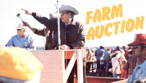
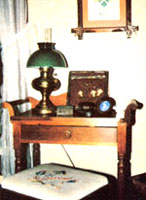
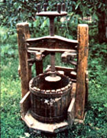
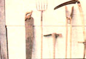
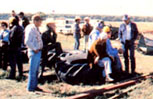

"SOLD" bellowed the auctioneer, "to the man in the blue jacket for $4.00. And that, sir, is one fine bargain."
I was the guy in the blue jacket, and I'm glad to say that the item I purchased was a pretty fair buy. For my $4.00 I got a used-but perfectly serviceable-pitch fork . . . a quality tool that would have cost me $15 to $18 in a store.
And there's no reason why anyone else couldn't duplicate (or better) my luck. The next time you decide to buy almost any kind of homestead equipment whether it be a set of dishes, a cookstove, a rocking chair, or a pickup truck-try visiting a local farm auction . . . you might well latch on to a really first-rate bargain.
Over the past year, by simply raising a hand or cocking an eyebrow so the auctioneer could see it, members of my family have purchased two large rugs, three pitchforks, an axe, an oak pie safe, two chests of drawers, a chair, an oak table, six boxes of canning jars, a lamp, and a scythe . . . and not one of our finds us more than $5.00!
'Furthermore, while it's true that all merchandise was secondhand (some of it even required quite a bit of fixing up), everything we've purchased has been potentially usable. And when you consider that we paid much less than half the retail price for each item, you'll understand why I feel that a farm auction can be a shopper's paradise. In addition, spending a day matching wits with other bidders (and with the auctioneer) is far more entertaining than huddling in front of the TV . . . and the chili dogs and made-fromscratch pecan pies served up by the church ladies who run the refresh- stand are (nearly) as good as my wife's :re's home cooking.
If f you don't know what you're doing, however, you can drive away from your must farm auction with a truckload of trash, and you might even pay more for an old article than you would to purchase the same item new in a store. Also, there's a real danger of catching "auction fever"-an uncontrollable urge to pay too much for something you don't really want or need-as a result of get ting caught up in the excitement of the Moment.
Fear not, though, because I'm a veterauctiongoer (who's already made all of those mistakes!), and I've decided to share some of my hard-earned knowledge by explaining a few of the terms I you'll hear at such an event . . . and by listing a selection of hints that'll help the novice bargain hunter keep a tight grip his or her pocketbook and go home, with a bonanza of budget-priced goodies.
MASTERING THE LINGO
Make most organized activities, auctons have a peculiar set of terms that the beginner should become acquainted with. ("Auction" itself is derived from the Latin word auctionem . . . a process which Roman soldiers bought captured booty on the battlefield by topping to each other's offers for the plunder.) Once you've cracked the code, you'll be able to follow the action with a minimum offuss.
A bid is the amount that you offer to pay for the merchandise . . . and increments are the jumps in price-there's usually a minimum-by which that sum increases. Opening the bid refers to the sum at which the offers start, and just how high that initial bid should be is often a source of great debate among auction buffs. Some folks prefer to open low, hoping that-with luck-buyer interest will be minimal and they'll waltz away with the object for a song. Other peopleespecially those who are really keen on owning a particular item-will start a little high . . . with the intent of discouraging rival buyers. Still another group believes it's most effective not to bid at all until the action slows down. You'll just have to work out your personal auction strategy as you gain experience.
A lot is a number of pieces that are sold as a unit, such as a set of dishes or a matched pair of chairs. Knocked down is the auctioneer's term for "sold": for example, "That table was knocked down at $15." A reserve is the lowest price that can be accepted for an article. While most farm auctions will not include a great number of reserve items, an expensive piece of farm machinery or the like may have a reserve price . . . and a conscientious auctioneer will generally tell you whether that condition exists before the bidding starts. As is is selfexplanatory: It means that you're buying the object nicks, cracks, burnt-out motor, and all.
Many auctions assign buyer's numbers. To obtain one, you simply register with the event's secretary, and he or she will give you a card with a number that's recorded each time you bid in an item. This practice simplifies bookkeeping, since the secretary can then run a tab for your purchases, and you can settle up your bill when you leave. Buyer's numbers also provide bidders with a certain anonymity.
HELPFUL HINTS FOR PENNY PINCHERS
While you're learning "auctionese", you'll also be gaining assurance in your ability to recognize, and bid on, bargains. My auctioneer friend, Colonel Archie Ringgenberg, and I have compiled a list of tips that'll help a novice avoid misunderstandings and expensive mistakes.
[1] Read the sale bills-which are ads in local newspapers, or flyers that describe the merchandise being offeredbefore the auction. By doing so, you'll know which things you're interested in and be able to check their retail prices. At the same time, you should note the terms of the sale and work out your own financial arrangements. Many auctions demand cash, and others will accept checks drawn only on local banks . . . before you can remove your purchases.
[2] Thoroughly inspect any merchandise you want to bid on prior to the opening of the auction. Arrive early enough (or attend the preview day if the goods are exhibited to the public beforehand) to pore over the loot. You should, for example, plug in electrical appliances to see if they work . . . crank the handles of mechanical item to make sure the gears aren't frozen . . . and check bureaus or chests for missing or mismatched pull::
[3] Make a list of the items you want tit and stick to it to avoid compulsive biting. Many auctions place convenient little numbered stickers on each article or lot, and these are announced as the ob jects are put up for sale. Jot down the numbers of any goods you're interests interested in, with a brief description of each and- this point is crucial-the maxima maximum you're willing to pay for the privilege of owning it. (My buddy Colonel Arch such a master at getting his auction to relax that most folks dot even notice the pain as their money wings its way out of their wallets!)
[4] Find out what an object's worth. . you've done your homework, you won't ' get so carried away that you pay more for a broken-handled pitchfork than you would for a new one. On the other hand don't let the fact that an article is used affect your judgment. You can find real bargains in merchandise whose or fault is that its owner no longer needs Keep in mind the old adage: One person's trash is another's treasure.
[5] Know how you're bidding. Suppo there are four chairs in a row: Is the attioneer selling them one at a time or four at once? If the sale is announced one money, you're bidding on all fore , chairs. Tames the money means, on the, other hand, that you're bidding the price of one chair, and if the lot is knock, . down to you, you'll get all four chairs . four tunes your final bid. Choice chairs means that your winning bid with buy you first pick among the four. (Mc auctioneers will then let you-or anyone else in the audience-take any or all . the remaining chairs for the same price If there's no interest, the bidding star anew.)
[6] Be sure you understand the spiel While a good auctioneer chants or sing songs, he or she is telling you what's going sold and how, plus both the current bid and the price that's being sought Listen carefully until you're certain you're following the action. It's a shock, for instance, to find out you bought a hammer for $12.50 when you thought the bid was $2.50.
[7] Stop the show if you have a ques tion. If you don't know which box of nail for example, is being sold-or if you thought you were offering $10 for all four chairs and it's a "times the money" -halt the proceedings and explain. honest auctioneer will either go back the previous bidder in such a case open the bidding again.
[8] Secure your goods. As soon as the auctioneer says "sold" and hands over the merchandise, it's your responsibili ty One of the biggest problems at auc- tions is thievery. Be forewarned: Watch your loot or lock it up.
[9] If you go with friends, stay together and decide-in advance-who'll do the bidding on which items. Despite the fact that we understand this rule, my wife and I invariably bid against each other, at least once during each auction. It can be pretty embarrassing to realize that the "stubborn pest" in the back who keeps topping your offer is your spouse
[10] Watch your hands. You've likely heard the horror stories about auction iongo who were waving at friends and suddenly found themselves the proud owners of, for instance, a moosehead. While some such tales are so old they ought to have whiskers, it is probably safest to control your hand movements until an auctioneer becomes familiar with your bidding mannerisms.
[11] Drive a truck. As I mentioned before, your new property is your responsibility ... and auctions often aren't equipped to hold the merchandise until you can pick it up. If you have plenty of room to stash and transport your goods, you'll also avoid paying hauling charges, which can add considerably to your "bargain" prices (it's a good idea, too. to pack along a couple of folding chairs in the pickup before you set out . . . just in case there's no seating available when you get to the sale location.)
[12] Enjoy the show. Sample the refreshments and chuckle over the jokes. Above all, relax and don't allow yourself to get so uptight that you bid against someone just to keep him or her from obtaining an item you can't use anyway.
Farm auctions are far more than just means of selling merchandise. They're social gatherings . . . complete with hot coffee, chili dogs, homemade pies, and friendly conversation. There's no better place to spend a leisurely day in the country-or to get an education in Old time comparative shopping-than at a rural auction ... and, while you're learning, you just may walk away with the "bargain of a lifetime"!
EDITOR'S NOTE: If Randy Kidd's tips for the novice bargain hunter hare whetted your appetite for farm sales, you'll want to read Auction! The Guide to Bidding, Buying, Bargaining, Selling, Exhibiting, & Making a Profit by William C. Ketchum, Jr. This book is available at libraries and bookstores, or-for $10.95 plus 95 cents shipping and handling-Mother's Bookshelf, P.O. Box 70, Hendersonville, North Carolina 28791.
|
 |
 |
 |
|
 |
 |
|